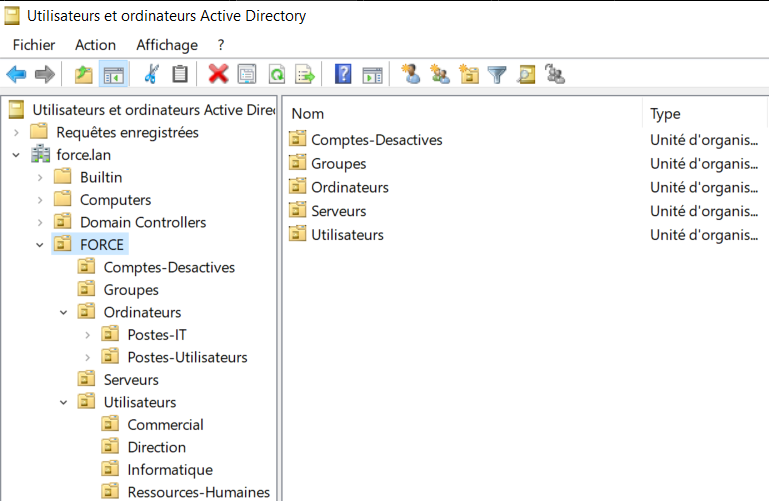
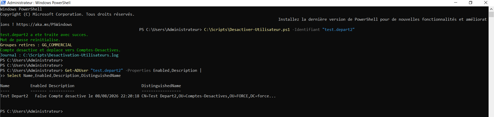
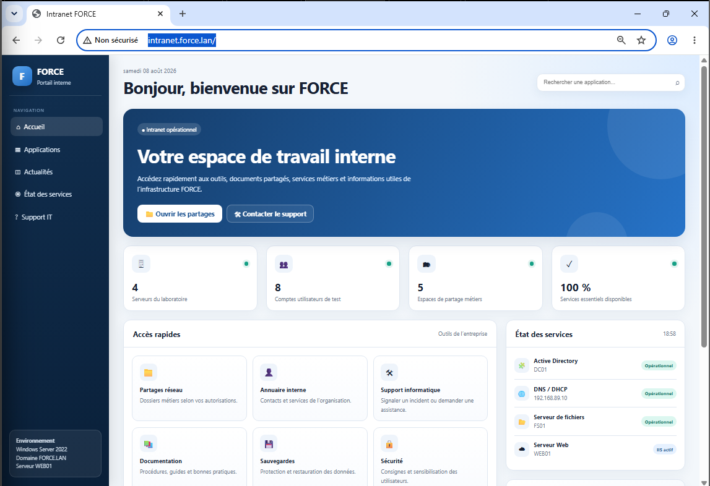
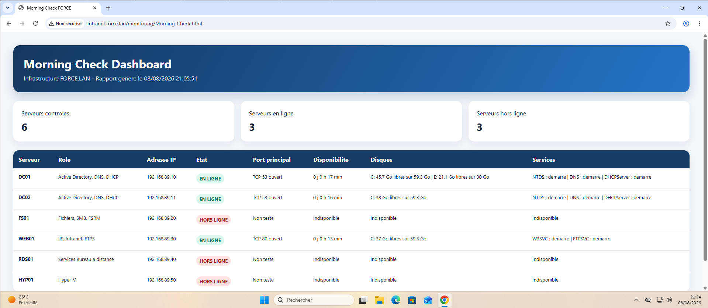
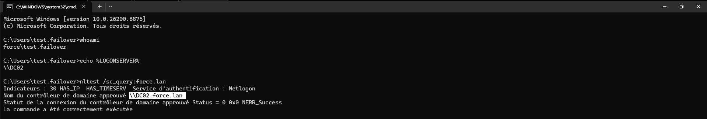

Administration Windows Server & services d’infrastructure
Conception et validation d’un laboratoire d’entreprise FORCE.LAN sous Windows Server 2022 : identité, réseau, fichiers, automatisation, sauvegarde, services, supervision et continuité de service.

Une infrastructure Windows complète
Le laboratoire a été construit pour reproduire les principaux services d’une petite infrastructure d’entreprise, avec séparation des rôles et validation depuis un poste Windows 11 joint au domaine.
Identité & accès
Active Directory, OU, utilisateurs, groupes, AGDLP, GPO, lecteur réseau et cycle de vie des comptes.
Réseau & fichiers
DNS, DHCP, SMB, NTFS, Access-Based Enumeration et FSRM avec quotas et filtrage de fichiers.
Automatisation
Onboarding CSV et offboarding PowerShell avec retrait des groupes, désactivation, quarantaine et journalisation.
Services
Intranet IIS, FTPS sécurisé, Remote Desktop Services et virtualisation Hyper-V imbriquée.
Sauvegarde & supervision
Windows Server Backup, restauration, System State, PerfMon et Morning Check Dashboard publié sur l’intranet.
Continuité de service
DC02, réplication AD/DNS, DHCP Hot Standby et test de panne réel de DC01.
Configuration et résultats




Un scénario de panne réellement testé
Un second contrôleur de domaine DC02 a été ajouté afin de réduire la dépendance à DC01. La réplication AD/DNS a été validée, puis le DHCP a été configuré en Hot Standby.

Consulter le projet en détail
La documentation complète présente l’architecture, les configurations, les validations fonctionnelles, les sauvegardes et les scénarios de panne du laboratoire FORCE.LAN.